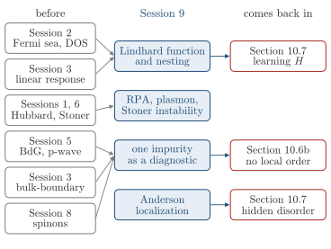

Advanced Quantum Materials 2027 · All lectures · Lecture notes
Session 9. Excitations and Defects in Quantum Materials
Video lecture · Landscape lecture · session9.ipynb · PDF of the notes
In Session 8 we built new ground states. These were the quantum spin liquids described by mean-field spinons, and the Kondo lattices, where the conduction electrons screen the local moments and a metal can become a Kondo insulator. Up to now every session has followed the same procedure. We take a many-body Hamiltonian, we solve it in a controlled or approximate way, and we read the resulting ground state. In this session we need several of the ground states of the course again. The first is the Fermi sea, with the density of states of Section 2.9. The second is the Hubbard model (1.7), with the mean-field magnetism of Section 1.14 and the Stoner criterion of Section 6.6. We also use the s-wave and chiral p-wave superconductors of Section 5.14, the bulk-boundary correspondence of Section 3.7 and the Abrikosov-fermion construction of Section 8.8. The tool of the whole session is linear response, which we first built in Section 3.2 and used for the Hall conductivity in Section 3.4.
Instead of building one more ground state, in this session we will probe the ground states that we already have. We disturb a material a little and we look at how it responds. The response is computed only from the undisturbed ground state, and it tells us a lot about that ground state. First we build linear response and the Lindhard function of a Fermi sea, and we see that it diverges at a nesting vector. Then we sum the interaction with the random phase approximation, which gives the plasmon and the Stoner instability. In this way magnetism appears as an instability of the paramagnetic response, and not as a mean-field ansatz that we impose by hand. After that we use single impurities as diagnostics in a metal, a superconductor, topological matter and a quantum magnet. They give Friedel oscillations, Yu-Shiba-Rusinov bound states, vacancy modes, and a decay law that separates gapped from gapless states. At the end we put many impurities together, which gives Anderson localization.

- In Session 10 the forward map from a Hamiltonian to an observable is run backwards, and in Section 10.7 a network infers the Hamiltonian of a magnet from a measured spectroscopy.
- In Section 10.7 the disorder realizations of this session are hidden variables that the training set must cover.
- In Section 10.6b a phase with no local order parameter must be found from a non-local quantity, as the vacancy of Section 9.8 finds topology.